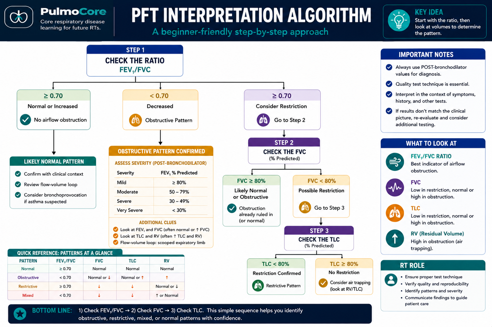

PFT Interpretation Practice
Learn a consistent way to read pulmonary function tests: first decide whether the test is trustworthy, then identify the ventilatory pattern, then use lung volumes, flow-volume loop clues, DLCO, and the clinical picture to narrow the likely diagnosis type and choose the next appropriate step.
0% complete
Quality first. Ratio second. Volumes third.
0 · TRUST IT?Were demographics entered correctly? Was the maneuver acceptable and repeatable?
1 · RATIOStart with FEV₁/FVC. A low ratio points toward airflow obstruction.
2 · VOLUMESUse FVC, TLC, and RV to decide whether volume is reduced or air is trapped.
3 · REFINEUse DLCO, the loop, bronchodilator response, symptoms, history, and imaging to narrow the likely process.
Course algorithm: For this practice, use FEV₁/FVC 0.70 and 80% predicted for FVC/TLC/DLCO decision points because those are the thresholds used in your PulmoLearn algorithm. In clinical practice, reference equations and lower limits of normal may be used instead of a single fixed cutoff.

You can scroll or zoom the page if you need a closer view of the algorithm.
Interpret the whole report.
Complete all required station questions to unlock the integrated cases. Your answer should reflect both the pattern and the best next clinical interpretation or step.
Use the algorithm while you work: Keep this decision pathway visible as you move through the cases so you can practice the same sequence every time.
Complete the required practice in all five sections to unlock the final cases.
Assignment complete ✓
You practiced the same sequence you should use on the weekly quiz, competency exam, and in clinical interpretation: quality → ratio → FVC → TLC → loop/DLCO → clinical context → next step.